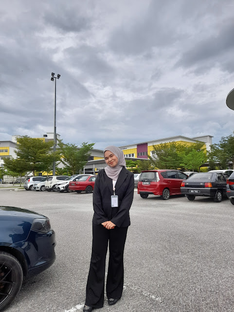

My journey at
Universiti Teknologi MARA (UiTM) began in
October 2022 after I was selected through the UPU application system.
I was offered a spot in the Information Management program, and that marked the start of an exciting new chapter in my life.
Starting at UiTM was a memorable experience for me. I quickly adapted to the vibrant campus atmosphere and made many new friends
along the way. These connections have made my time here even more meaningful.
The program has been an eye-opener, teaching me how to manage and organize information effectively,
which is an essential skill in today’s world. Outside of academics, I’ve explored various co-curricular activities,
discovered new interests, and participated in group projects and events that have helped me grow both personally and professionally.
My UiTM journey has been about more than just academics it’s been a time of friendships, learning, and self-discovery.
This experience has prepared me for future challenges and left me with memories that I will treasure forever.


{kind=link}